地政学
バンジュールはガンビア川が大西洋へ出る細い出口にあり、港、フェリー、国境外交、セネガルとの関係を引き受ける首都です。小国の行政と沿岸防衛、移民、観光の入口が同じ島へ集まり、対岸への道も政治を映します。
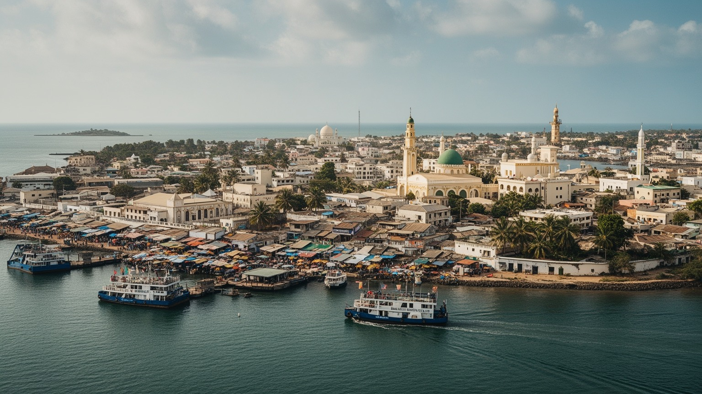
🇬🇲 ガンビア / バンジュール市 / World City Atlas
ガンビア川の河口に浮かぶ小さな首都です。港、フェリー、官庁、市場、モスク、植民地期の街路、海岸の観光、移民と送金、周辺都市圏の通勤が、狭い島の入口に集まります。
都市の骨格
バンジュールはセントメアリー島の低い土地にあり、港とフェリーで内陸、対岸、セネガル国境、観光海岸へつながります。小さな市域の外側に、カニフィングとブリカマへ広がる実質的な首都圏があります。
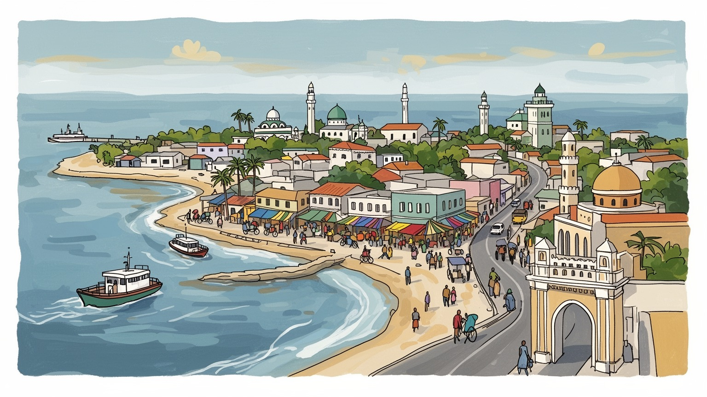
バンジュールはガンビア川が大西洋へ出る細い出口にあり、港、フェリー、国境外交、セネガルとの関係を引き受ける首都です。小国の行政と沿岸防衛、移民、観光の入口が同じ島へ集まり、対岸への道も政治を映します。
雇用は官庁、港湾、フェリー、漁業、ホテル、観光、小売、市場、交通に広がります。魚、落花生、送金、屋台、ラジオ広告が家計を動かし、若者は都市圏の仕事と移住、夜の買い物、スポーツ、食の場まで考えます。
イスラムの礼拝、キリスト教会、ウォロフ、マンディンカ、フラ、クレオールの記憶、コラ音楽、市場の食が重なります。宗教行事と家族の儀礼は、港町の開放性と近所のつながりを保ち、祝祭の日に街を強く結びます。
旅行者はアーチ22、国立博物館、アルバート市場、河口、ビーチへ向かいます。住民は浸水、海岸侵食、物価、雇用、交通、住宅、若者の将来に向き合い、狭い首都を毎日使い、生活の余白を工夫して探し続けています。
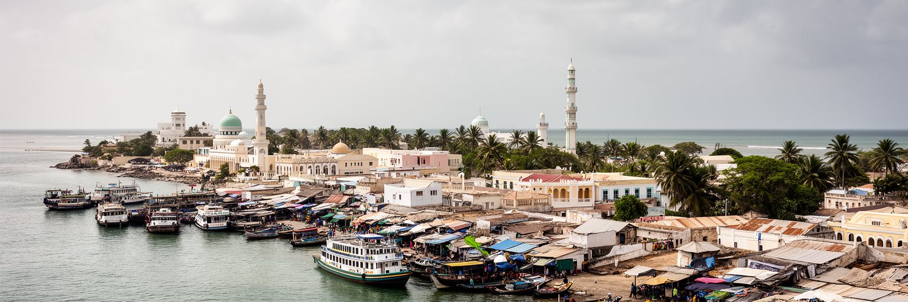
バンジュールを読む入口は、国の名前にもなったガンビア川の出口に首都が置かれていることです。街はセントメアリー島の低い土地にあり、川の対岸、内陸の集落、セネガルに囲まれた細長い国土、大西洋の航路を同時に見ています。市域は小さく、人口も周辺のカニフィングやブリカマを下回りますが、港、官庁、フェリー、裁判、中央銀行、市場がここに集まるため、国家の窓口としての重みは大きいです。河口の位置は交易と外交に向きますが、海面上昇、高潮、浸水、砂州、道路の混雑という弱さも抱えます。首都の景観は広い大通りや高層ビルより、フェリー乗り場、港のゲート、市場、モスク、古い街路の近さで成り立ちます。バンジュールは大都市ではありませんが、川を通じて内陸と外洋をつなぐ小さな結節点として、ガンビアの政治と生活を圧縮して見せます。河口は旅人には景色ですが、住民には物価、移動、仕事、災害の条件でもあります。島へ入る道路が限られるため、事故や渋滞はすぐ行政、学校、商いへ波及します。川の潮位や船の運航も、遠い地方の予定を左右します。地図では小さな点に見える首都が、国全体の時間を組み替える役割を担っています。さらに、河口は魚を育てる水域であり、漁師、魚売り、加工業者、家庭の食卓を支えます。朝のラジオが潮や交通の話題を運び、水辺の匂いと船の音が一日の始まりを知らせます。
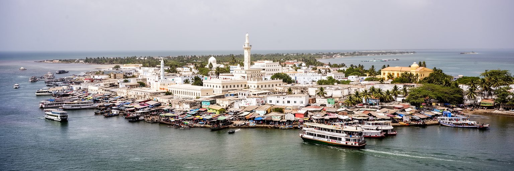
バンジュールは首都である一方、住民の数では国の最大都市ではありません。行政、議会、裁判、中央銀行、大使館、港湾管理、国家式典の多くが島に集まり、実際の人口増加と住宅開発はカニフィング、セレクンダ、ブリカマ方面へ広がります。このずれが、バンジュールの特徴です。政治の中心は狭い旧市街に残り、通勤者、商人、学生、フェリー利用者、観光客が毎日島へ入り、夕方には周辺地区へ戻ります。国家の意思決定はここで行われますが、その影響を受ける生活圏は島の外へ大きく伸びています。小国の首都では、行政の透明性、公共料金、雇用、公務員採用、学校、医療、港の運営が市民の信頼に直結します。1994年の軍事政権から2017年以降の政治移行を経て、民主化、法の支配、過去の人権侵害への向き合い方も首都の制度空間に刻まれています。広場や記念碑を見るだけでなく、窓口が公平に機能し、若者が仕事を探せるかまで見ることで、島の行政空間の意味が分かります。首都の小ささは、制度の失敗も改善も見えやすくします。議会の議論や裁判所の判断は、離れた村の土地、漁業、教育予算にも届きます。だから島の公共建築は、単なる官庁ではなく国民が国家を測る場所です。行政の信頼は、壮大な建物より、申請が進み、説明が届き、苦情が聞かれる日常で育ちます。小さな手続きほど大切です。
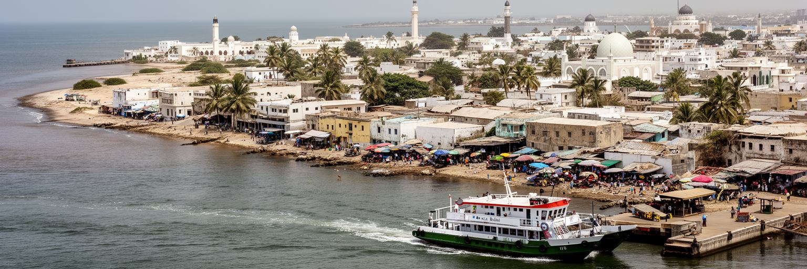
バンジュール港とフェリーは、首都の日常を支える実務の中心です。輸入食品、燃料、建材、車両、医薬品、日用品は港から入り、輸出品や再輸出の商流もここを通ります。ガンビアは細長い国土を川が貫くため、渡船と橋と道路の信頼性は、通勤、地方の商い、医療、学校、家族訪問に直結します。対岸のバラへ向かうフェリーは、観光客にとって旅の場面ですが、住民にとっては待ち時間、料金、故障、混雑が生活時間を左右する交通インフラです。港では荷役、通関、倉庫、運転手、整備、清掃、警備、事務の仕事が連鎖し、市場の価格にも影響します。港湾の効率が落ちれば、店頭の米や燃料、建材の値段に跳ね返ります。大型船と小さな漁船、旅客フェリー、タクシー、露店が近い距離で動くため、安全管理と道路設計も重要です。バンジュールを港町として見ると、政治首都の顔だけでは見えない労働の厚みが分かります。川を渡る時間、荷物を降ろす順番、税関の手続きは、国民経済の抽象的な数字よりも具体的に暮らしを左右します。港の信頼性は、首都への信頼を形にします。夕方の待合所では、売り子の声、携帯で見るサッカー速報、子どもを連れた家族、高齢者を先に通す配慮が交じります。夜の売店も待ち時間を仕事に変えます。物流を読むことは、都市の公平さと国家の体力を読むことでもあります。
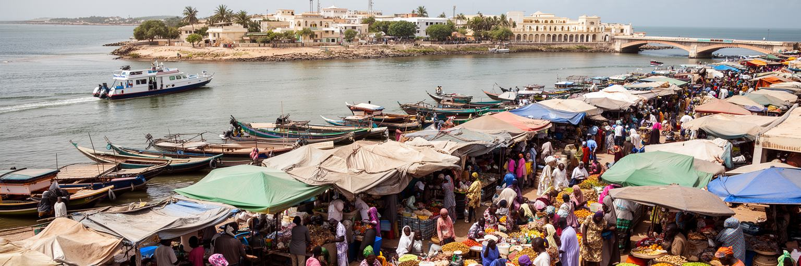
アルバート市場をはじめとするバンジュールの商いは、首都の家計を映す場所です。魚、米、落花生、野菜、香辛料、布、携帯用品、観光客向けの工芸品が並び、川沿いの漁、内陸の農村、港から入る輸入品、近隣国との商流が同じ通路で出会います。ガンビア経済では農業、観光、送金、サービス業が大きく、日々の市場価格は燃料、為替、港湾の遅れ、雨季の道路、海外からの仕送りに左右されます。市場で働く女性商人、若い運搬人、仕入れに動く小売業者、タクシーや屋台は、公式統計に出にくい都市経済を支えます。観光客にとって市場は色と音の体験ですが、住民にとっては少量で買い、信用で支払い、家族の食事を調整する生活の場です。衛生、排水、火災対策、日陰、トイレ、廃棄物処理が整わなければ、働く人の健康も食品の安全も守れません。市場はまた、ウォロフ語、マンディンカ語、英語、近隣諸国の言葉が交じる公共空間です。バンジュールの食を見ることは、小さな首都が川、農村、港、移民の送金でどう支えられているかを見ることです。市場の値札は、家庭の不安と工夫を正直に示しています。朝の仕入れ、氷の確保、雨を避ける屋根、帰宅の交通まで含めて、市場は都市インフラの総合試験場になります。買い物の会話は、物価だけでなく近所の信頼も確かめます。毎日の食卓へ続いています。
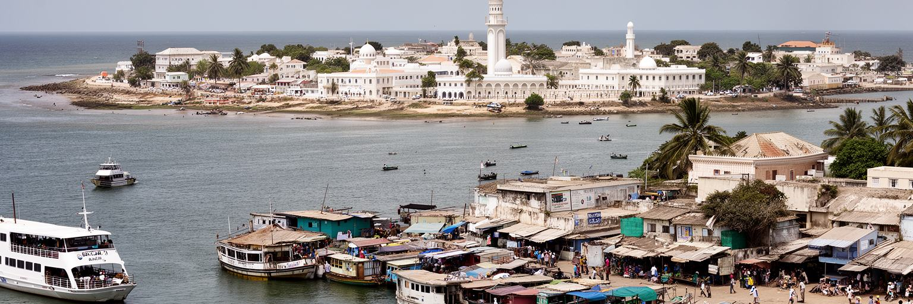
バンジュール観光は、アーチ22、国立博物館、アルバート市場、古い植民地期の街路、河口、フェリーの風景から始まります。多くの旅行者はさらに海岸リゾートや鳥類観察、ジェームズ島として知られたクンタ・キンテ島、村落訪問へ向かい、首都はその玄関になります。観光はホテル、ガイド、運転手、工芸品店、レストラン、音楽、両替、通信に仕事を作りますが、季節性が強く、外部の旅行需要や航空便に左右されます。観光客が短く街を通過するだけでは、収入は一部の施設に偏り、市場や地域の小商いへ十分に広がりません。バンジュールの観光を深くするには、植民地支配、奴隷貿易、独立、軍政、民主化、イスラムの生活、川の交通を、単なる名所案内ではなく都市の記憶として伝える必要があります。記念碑は写真の背景である前に、政治権力と市民の経験を考える入口です。観光の質は派手な施設だけでなく、安全に歩ける道、分かりやすい案内、公正な料金、地元の語り手に収益が残る仕組みで高まります。バンジュールを訪れることは、海岸休暇の前後に、ガンビアという国の歴史を街路の距離で読むことでもあります。短い滞在でも、見る順番で都市の理解は大きく変わります。博物館や市場の説明が丁寧なら、旅行者は消費だけでなく記憶への敬意を持って街を歩けます。歩く速度を落とすほど、首都はリゾートの前座ではなく物語を持つ場所になります。
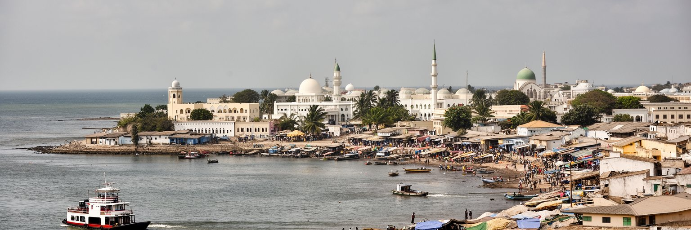
バンジュールの文化は、イスラムを中心にした日常の暦、少数派キリスト教の教会、ウォロフ、マンディンカ、フラ、ジョラ、クレオール系アクの記憶、近隣国からの移住が重なって形作られます。金曜礼拝、ラマダン、タバスキ、命名式、結婚、葬儀、家族の集まりは、都市の時間を区切ります。英語は行政と学校の言語ですが、街では複数の地域語が使われ、市場やタクシーでは言葉の切り替えが生活技術になります。ガンビアの音楽ではコラ、ジャンベ、グリオの語り、現代ポップが結びつき、政治や移民の経験を歌にすることもあります。宗教は観光用の建物に閉じず、食の規範、慈善、教育、近所の助け合い、商売の信用に関わります。港町であるため、レバノン系、シエラレオネ系、セネガル系など多様なつながりも都市文化に影響します。多文化性は自然に調和するものではなく、結婚、商売、学校、宗教行事、政治の中で調整されます。バンジュールの魅力は、狭い街路で祈り、音楽、家族、商いが近くにあることです。その近さは時に窮屈ですが、困った時に声が届きやすい共同性も生みます。文化を読むには、祭りの音だけでなく、毎日の挨拶と信用の作り方を見る必要があります。結婚式や命名式のために親族が集まる時、海外の家族からの送金も食卓と音楽に姿を変えます。祈りの時間を尊重することは、商いと近所づきあいの礼儀にもなります。
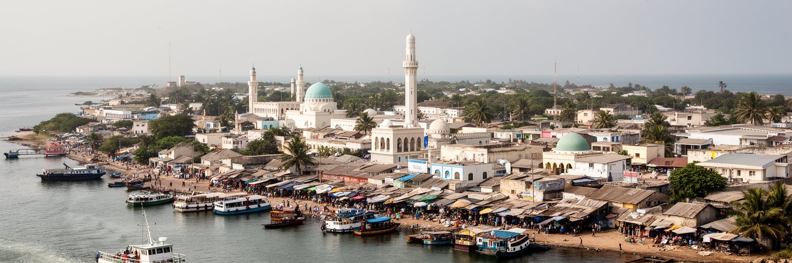
バンジュール市だけを見ると、ガンビアの都市化を読み違えます。人口増加、住宅開発、商業、学校、交通の多くは、カニフィング、セレクンダ、コツ、バカウ、ブリカマ方面へ広がるグレーター・バンジュール地域で起きています。国勢調査でも首都市域の人口比率は小さく、周辺の自治体が急速に膨らんでいます。これは島の土地が限られ、住宅や新しい仕事が外へ押し出されるためです。朝には周辺地区から官庁、港、市場、学校へ人が流れ、夕方には逆方向へ戻ります。都市圏の暮らしでは、道路渋滞、ミニバス、タクシー、燃料費、家賃、排水、学校の距離が大きな負担になります。行政境界が分かれていても、住民の生活は一つの連続した都市として動いています。首都機能がバンジュールに残り、人口と住宅が外へ広がるほど、広域交通、廃棄物、水道、電力、土地利用を自治体横断で考える必要があります。都市圏の成長は雇用機会を増やしますが、無計画な開発は湿地、農地、沿岸環境を圧迫します。学校帰りの子ども、夜の小さな食堂、サッカー場、SNSで仕事を探す若者は、島外の都市化を日常として使っています。セレクンダやブリカマで住む人が、働き、学び、病院へ行けるかが、首都全体の使いやすさを決めます。通勤の長さや家賃の上昇は、若い世帯の進学、起業、結婚にも影響します。
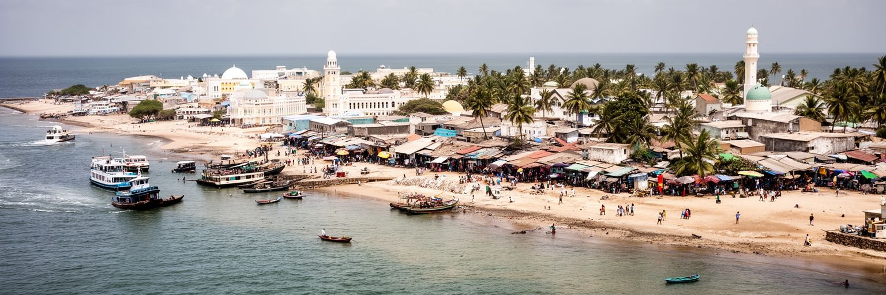
バンジュールの気候リスクは、首都が低い島にあることから始まります。乾季には砂ぼこりと海風が街を乾かし、雨季には激しい雨が排水路、未舗装部分、低地の住宅、港の周辺を試します。海岸侵食、高潮、塩水の影響、洪水は、道路、住宅、観光地、港湾施設、墓地、公共建築に関わります。気候変動が進むほど、海面上昇と強い降雨は小さな首都の安全を脅かします。護岸や排水整備は必要ですが、単にコンクリートを増やせばよいわけではありません。湿地の保全、ゴミ詰まりの防止、避難情報、土地利用の規制、貧しい世帯の住宅支援が同時に必要です。住民にとって気候対策は国際会議の言葉ではなく、雨の日に学校へ行けるか、店の商品が濡れないか、病院へたどり着けるかという生活条件です。観光の海岸も、住民の防災と切り離せません。景色のよい水辺が壊れれば、収入も住まいも失われます。バンジュールは、気候危機が小島しょだけの課題ではなく、河口の首都、港湾、低所得世帯、観光、国家財政を一度に揺らすことを示しています。小さな排水溝を清掃することも、長期の適応策の一部です。海に近い美しさは、海に近い脆さと常に隣り合っています。避難情報がラジオや携帯で高齢者、子ども、旅行者へ届く仕組みも欠かせない備えです。気候適応は、市民が参加して初めて続く公共事業です。
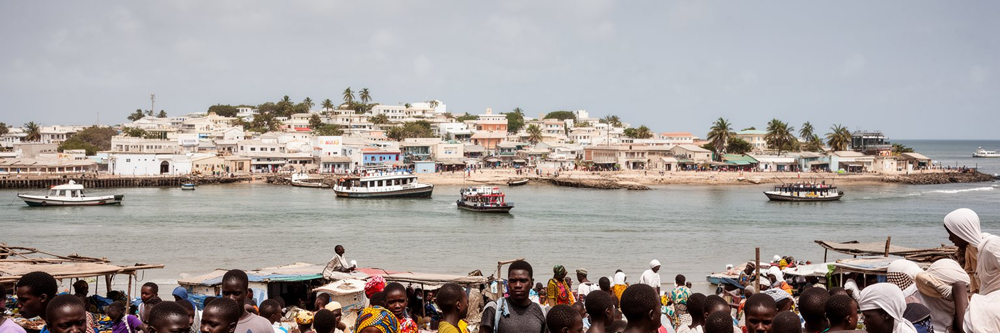
バンジュールと周辺都市圏の若者は、学校、港、観光、サービス業、行政、通信、建設、小商いの近くにいますが、安定した仕事を得ることは簡単ではありません。ガンビアでは海外移住と送金が家計と社会に大きな意味を持ち、ヨーロッパや近隣国へ向かう選択は、希望であると同時に危険や家族の負担も伴います。首都には情報、手続き、旅行会社、通信、銀行、親族ネットワークが集まり、移民の準備と帰国後の投資が都市生活に影響します。若者は公務員、観光業、運転、港湾、SNS販売、音楽、小売、海外就労の間で将来を考えます。学歴や技能があっても、採用の透明性、人脈、資金、交通費、家族の扶養が進路を左右します。女性の就労には、安全な移動、家事負担、教育機会、早婚への圧力も関わります。放課後のサッカー、ラジオ番組への投稿、夜の音楽イベントは、息苦しい就職市場の外で仲間を作る場にもなります。送金は家を建て、学費を払い、店を開く力になりますが、国内に十分な機会がなければ、都市は人材を送り出すだけになります。バンジュールの未来は、若者が残ることも出ることも選べる条件を作れるかにあります。港から見える外の世界は、夢と現実の両方を運んでいます。夜の練習場や学習塾、路上の小さなデジタル商売も、若者が都市で自分らしい居場所を作る手段です。
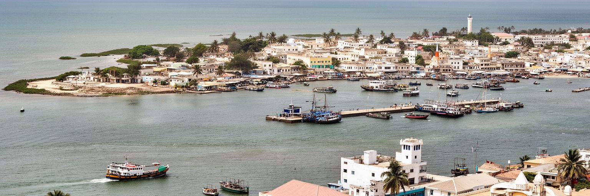
バンジュールは、人口や面積だけで見れば世界都市の尺度から外れます。それでも、この小さな河口首都には、国家の制度、港湾物流、川の交通、観光、移民、宗教、市場、気候リスク、広域都市圏の膨張が密に重なっています。首都市域は縮小気味でも、周辺のセレクンダやブリカマは急速に成長し、実際の都市生活は島の外へ広がっています。バンジュールを読むことは、中心が小さく、生活圏が大きい首都を読むことです。港で荷物が動き、フェリーが対岸へ渡り、市場で魚と米が売られ、モスクから祈りが聞こえ、若者が海外と国内の将来を比べる時、ガンビアの現在が見えてきます。経済規模だけでは、気候変動にさらされる低い土地、送金に支えられる家計、観光の季節性、民主化後の制度づくり、近隣セネガルとの関係は捉えられません。バンジュールの重要性は、巨大さではなく、国の弱さと可能性が狭い河口に集まる点にあります。街を歩く時は、アーチや市場だけでなく、排水路、フェリー待ち、港の労働、通勤者の流れを見る必要があります。そこに、小さな首都が世界の課題を引き受ける姿があります。低い島の首都がどのように働き、祈り、稼ぎ、海へ備えるかを見ると、都市の価値は大きさではなく責任の集中で測れることが分かります。川と海の間で暮らす人の時間を追うほど、国の未来が具体的に見えます。